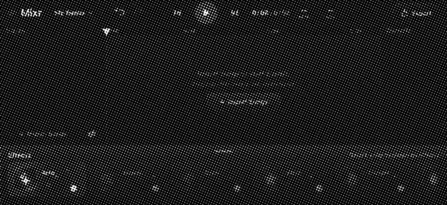
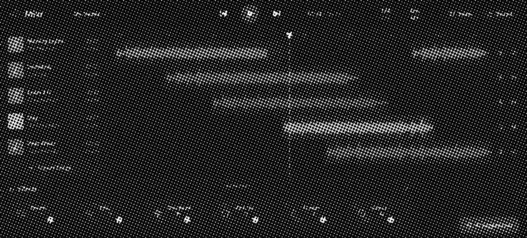

DJ software can be intimidating. Mixr makes remixing easy by using familiar patterns from video editing apps. Building the app was an experiment in designing by building: to see if I could close the design and engineering gap by designing as I go.
I wanted to learn to DJ, but I never learned music theory, played an instrument, or remixed a song. I did know how to code. So instead of buying a controller, I started building an app.
Can coding agents help me design and build software for something I know nothing about?

I wanted to give beginners a familiar place to start. The reference was video editors like CapCut, Final Cut Pro, Premiere Pro, and GarageBand.
These products share a familiar interaction model: import media, arrange clips on a timeline, edit them directly, preview, and undo.
“As simple as CapCut” was in the first prompt. It gave me actions like split, duplicate, and delete that I needed to incorporate into timeline editing.
With a background in video editing, this was the editor I knew best. Drag-and-drop and the SFX (sound effects) library were all inspired by Premiere Pro.
Taught me to use the music’s unit rather than the clock’s. Transitions are measured in beats rather than seconds so timing aligns with tempo.
I started by asking ChatGPT for mocks. I find it has the best image generation capabilities and doesn’t return UI that looks AI-generated.
I knew what I wanted to change. “AI Suggestions” was a floating button and belonged in the effects tray. It should also be called “Auto” like iPhone photo editing. I had no idea what the “Mixr” button on the top would do, so it had to go.
But the layout was right, and I never looked back. Controls on the sides, timeline in the middle, effects along the bottom. It felt intuitive because it resembled video editing software, not a DJ’s.

I considered copyright before designing anything. Mixr can’t stream from a library like Spotify, so the whole thing is built around import and export. You bring your own songs in and save your remix out.
Deciding how drag-and-drop behaves took two days and was the hardest design work in the project.
I took inspiration from Premiere Pro (thank you, competitive research). When a clip is dropped in the middle, it splits the existing clip and gets sandwiched inside. When it’s dropped within 10px of the start or end, it snaps to the edge.
I varied bubble placement in the effects cards and let glow reflections spill onto neighboring cards. These subtle differences let the glass breathe and feel alive.
Each card gets a different glow strength, because darker colors appear dimmer and I wanted visual cohesion. Icons in the clip-editing toolbar get different sizes and vertical offsets because their shapes carry different visual weight.
Other effects I considered were Warmth, Chorus, and Bass Boost. I chose this set because they each had distinct impact on audio and allowed room for experimentation.
One color per track. The same color follows across the waveform, volume slider, transition settings, and segmented control. This helps users understand the components go together.
For big tasks, I used Plan Mode. No code changes until I reviewed and approved the plan. I used this heavily for my last two phases: responsive layout and accessibility testing. Auditing stopped agents from undoing previous work and changing components I already finalized.
I started a new chat for each major component like effects cards, drag-and-drop, SFX, etc. Each agent had less to remember. It stayed focused and learned that component’s behavior in depth.
An agent is a jack of all trades, master of none. Unless you use skills. Skills train agents to become experts at certain tasks. I used skills for SwiftUI and motion. I created a custom skill for Auto remixing so my agent has a DJ brain.
Lint rules are gates the agent must always pass. Everytime I corrected an agent or intervened its output, I turned it into a lint rule so it never made the same mistake again.
The app is fully built. I’m now waiting for approval from the Apple Developer Program to release TestFlight Beta. Everything so far reflects my own judgment. The real test is whether other people can use and understand Mixr.
The intimidating part of learning a new skill is the interface scaring you away. Building Mixr taught me anyone can do it: not just DJing, but building an app. So get on a coding agent and make something that excites you!